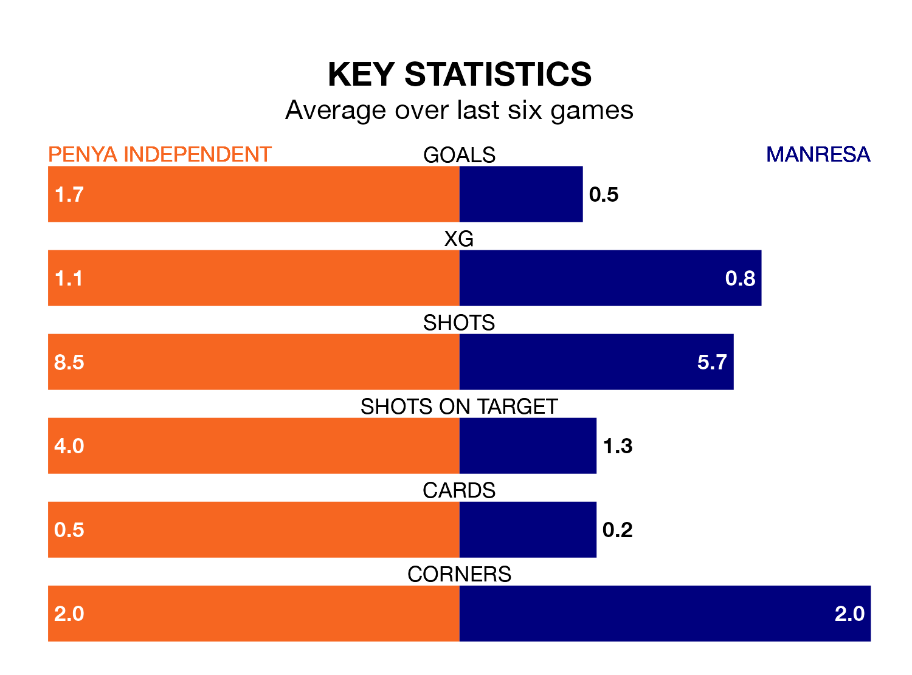

Sunday's early match sees two relegation candidates play each other, as 16th-ranked Penya Independent host 17th-placed Manresa.
Penya Independent have picked up 25 points from their first 25 Segunda División RFEF Group 3 games, with six wins and seven draws.
That is two points more than Manresa have collected, having won five and drawn eight.
Penya Independent are in mixed form in the Segunda División RFEF Group 3, with three wins and a draw from their last six games.
With no wins and a draw over that period, Manresa's form is much worse – they have taken one point from 18, compared to the home team's 10.
With 21 goals in 27 games so far this season, the visitors are the league's second-lowest scorers with 0.8 goals per game. But they are conceding fewer than average too, letting in 31 goals at a rate of 1.1 per game.
Penya Independent are also below average scorers, with 1.0 goal per game, compared to a league average of 1.2. They have conceded 1.5 goals per game.
Penya Independent's last match was on March 17, a 2-1 loss against Atlético Saguntino, with Rayco Pérez González getting the goal for Penya Independent.
Manresa lost 2-1 against Andratx last time out, also on March 17, with Omar Ouhdadi on the scoresheet.
Updated: 10:19 (UTC), 22/03/24